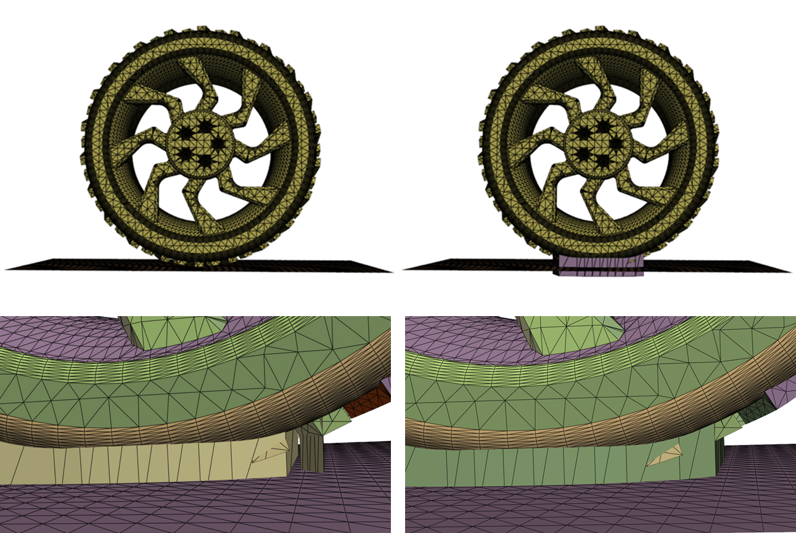

Note
Go to the end to download the full example code.
Create a contact patch for wrapping between a wheel and ground interface#
Summary: This example demonstrates how to create a contact patch for use with wrapping to avoid meshing into a narrow contact region between two objects.
Objective#
This example uses a contact patch for wrapping to avoid the interface of a wheel with the ground to improve mesh quality when growing prism layers in the region of the contacting faces.
{kind=link}
The preceding image shows the following:
Top left: Wheel/ground interface
Top right: Addition of contact patch
Lower left: Grouping tolerance at 4 with multiple contact patches
Lower right: Grouping tolerance at 20 with merged single contact patch
Procedure#
Launch an Ansys Prime Server instance and instantiate the meshing utilities from the
lucidclass.Import the wheel ground geometry.
Convert the topo parts to mesh parts so that the contact patch can be created.
Create a contact patch between the wheel and the ground.
Extract the fluid region using wrapping.
Volume mesh with polyhedral and prism cells.
Write a CAS file for use in the Fluent solver.
Exit the PyPrimeMesh session.
Launch Ansys Prime Server#
Import all necessary modules and launch an instance of Ansys Prime Server.
From the PyPrimeMesh client, get the model.
Instantiate meshing utilities from the lucid class.
import os
import tempfile
import ansys.meshing.prime as prime
from ansys.meshing.prime.graphics import PrimePlotter
client = prime.launch_prime()
model = client.model
mesh_util = prime.lucid.Mesh(model)
Using Ansys Prime Server from container ansys-prime-server-11
Import CAD geometry#
Download the wheel ground geometry (FMD) file exported by SpaceClaim. Import the CAD geometry. The geometry consists of two topo parts: a wheel and an enclosing box. Labels are defined for the ground topo face on the enclosure and for the wheel as all the topo faces of the wheel part.
# For Windows OS users, SCDOC or DSCO is also available. For example:
# wheel_ground_file = prime.examples.download_wheel_ground_scdoc()
wheel_ground_file = prime.examples.download_wheel_ground_fmd()
mesh_util.read(wheel_ground_file)
###################
# Visualize results
# =================
# .. code-block:: python
#
# display = PrimePlotter()
# display.plot(model, scope=prime.ScopeDefinition(model, label_expression="ground, wheel"))
# display.show()
print(model)
Part Summary:
Part Name: enclosure
Part ID: 2
12 Topo Edges
6 Topo Faces
1 Topo Volumes
0 Edge Zones
Edge Zone Name(s) : []
0 Face Zones
Face Zone Name(s) : []
1 Volume Zones
Volume Zone Name(s) : [enclosure]
6 Label(s)
Names: [back, front, ground, side_left, side_right, top]
Bounding box (0 -2.30926e-12 0)
(453.2 774.6 655.059)
Part Name: wheel_body
Part ID: 3
1900 Topo Edges
722 Topo Faces
1 Topo Volumes
0 Edge Zones
Edge Zone Name(s) : []
0 Face Zones
Face Zone Name(s) : []
1 Volume Zones
Volume Zone Name(s) : [wheel_body]
1 Label(s)
Names: [wheel]
Bounding box (129.1 119.57 0.0104403)
(324.1 655.03 535.509)
Convert topo parts to mesh parts#
Convert the faceted geometry of the topology to mesh for all parts as the contact patch requires face zonelets from mesh parts as input.
wheel_part = model.get_part_by_name("wheel_body")
enclosure_part = model.get_part_by_name("enclosure")
[part.delete_topo_entities(prime.DeleteTopoEntitiesParams(model)) for part in model.parts]
[<ansys.meshing.prime.autogen.partstructs.DeleteTopoEntitiesResults object at 0x7f466dd2b910>, <ansys.meshing.prime.autogen.partstructs.DeleteTopoEntitiesResults object at 0x7f466dd2b640>]
Create a contact patch#
To create a contact patch, a direction is needed to define the resulting shape of the patch. A new part is created containing the patch. A prefix can be specified for the label created for the contact patch face zonelets generated. The offset distance determines the thickness and extent of the patch. The source face zonelet is offset to intersect the planar target face and the intersection used to define the contact patch. Due to the depth of the treads on the wheel, 20.0 is used as the offset to reach the tire surface. If multiple contact regions are found, they can be merged by grouping them using the grouping tolerance distance. With a grouping tolerance of 4.0, separate contact regions are created for some of the treads of the tire, see the image at the top of the example. To merge these contact regions into a single patch, the grouping tolerance distance is increased to 20.0, avoiding small gaps between contact regions.
# The face zonelets of the wheel are defined as the source.
# The planar surface must be specified as the target.
# In this instance, the ground provides the planar target.
source = wheel_part.get_face_zonelets()
target = enclosure_part.get_face_zonelets_of_label_name_pattern(
"ground", prime.NamePatternParams(model)
)
params = prime.CreateContactPatchParams(
model,
contact_patch_axis=prime.ContactPatchAxis.Z,
offset_distance=20.0,
grouping_tolerance=20.0,
suggested_label_prefix="patch",
)
result = prime.SurfaceUtilities(model).create_contact_patch(
source_zonelets=source, target_zonelets=target, params=params
)
print(result.error_code)
print(model)
###################
# Visualize results
# =================
# .. code-block:: python
#
# display = PrimePlotter()
# display.plot(
# model, scope=prime.ScopeDefinition(model, label_expression="ground, patch*, wheel")
# )
# display.show()
ErrorCode.NOERROR
Part Summary:
Part Name: enclosure
Part ID: 2
12 Edge Zonelets
6 Face Zonelets
0 Cell Zonelets
0 Edge Zones
Edge Zone Name(s) : []
0 Face Zones
Face Zone Name(s) : []
1 Volume Zones
Volume Zone Name(s) : [enclosure]
6 Label(s)
Names: [back, front, ground, side_left, side_right, top]
Bounding box (0 -2.30926e-12 0)
(453.2 774.6 655.059)
Part Name: wheel_body
Part ID: 3
1900 Edge Zonelets
722 Face Zonelets
0 Cell Zonelets
0 Edge Zones
Edge Zone Name(s) : []
0 Face Zones
Face Zone Name(s) : []
1 Volume Zones
Volume Zone Name(s) : [wheel_body]
1 Label(s)
Names: [wheel]
Bounding box (129.1 119.57 0.0104403)
(324.1 655.03 535.509)
Part Name: __contact_patch__
Part ID: 4
2 Edge Zonelets
1 Face Zonelets
0 Cell Zonelets
0 Edge Zones
Edge Zone Name(s) : []
0 Face Zones
Face Zone Name(s) : []
0 Volume Zones
Volume Zone Name(s) : []
1 Label(s)
Names: [patch___contact_patch__]
Bounding box (131.611 284.832 -20)
(321.599 488.776 60)
Wrap the fluid region#
The largest internal region in this instance is the fluid region around the wheel. Intersection loops are created to capture the features at the corners between the patch, ground, and wheel.
model.set_global_sizing_params(prime.GlobalSizingParams(model, min=4.0, max=100.0, growth_rate=1.4))
# Create a size control to limit the size of mesh on the wheel.
size_control = model.control_data.create_size_control(prime.SizingType.SOFT)
size_control.set_soft_sizing_params(prime.SoftSizingParams(model=model, max=8.0))
size_control.set_scope(prime.ScopeDefinition(model=model, label_expression="wheel"))
wrap_part = mesh_util.wrap(
min_size=4.0,
max_size=100.0,
region_extract=prime.WrapRegion.LARGESTINTERNAL,
create_intersection_loops=True,
wrap_size_controls=[size_control],
)
Open a pyvistaqt window#
display = PrimePlotter()
display.plot(
model,
scope=prime.ScopeDefinition(model, label_expression="ground, patch*, wheel"), update=True
)
display.show()
print(model)
Part Summary:
Part Name: __wrap__
Part ID: 5
1 Edge Zonelets
617 Face Zonelets
0 Cell Zonelets
0 Edge Zones
Edge Zone Name(s) : []
0 Face Zones
Face Zone Name(s) : []
1 Volume Zones
Volume Zone Name(s) : [enclosure.1]
14 Label(s)
Names: [___geom_features___, __contact_patch__, __extracted__features__, __intersect_loops__, back, enclosure, front, ground, patch___contact_patch__, side_left, side_right, top, wheel, wheel_body]
Bounding box (0 -2.30926e-12 -20)
(453.2 774.6 655.059)
Volume mesh#
Apply five layers of prisms to the wheel, patch, and ground. Mesh with polyhedrals.
model.set_global_sizing_params(prime.GlobalSizingParams(model, min=4.0, max=100.0, growth_rate=1.4))
mesh_util.volume_mesh(
volume_fill_type=prime.VolumeFillType.POLY,
prism_layers=5.0,
prism_surface_expression="wheel, patch*, ground",
prism_volume_expression="*",
scope=prime.lucid.VolumeScope(part_expression=wrap_part.name),
)
display = PrimePlotter()
display.plot(
model,
scope=prime.ScopeDefinition(model, label_expression="!front !side_right !top"),
update=True,
)
display.show()
mesh_util.create_zones_from_labels()
wrap_part._print_mesh = True
print(wrap_part)
Part Name: __wrap__
Part ID: 5
1 Edge Zonelets
617 Face Zonelets
1 Cell Zonelets
0 Edge Zones
Edge Zone Name(s) : []
8 Face Zones
Face Zone Name(s) : [__contact_patch___patch___contact_patch__, wheel_wheel_body, back_enclosure, enclosure_top, enclosure_front, enclosure_side_left, enclosure_ground, enclosure_side_right]
1 Volume Zones
Volume Zone Name(s) : [enclosure.1]
14 Label(s)
Names: [___geom_features___, __contact_patch__, __extracted__features__, __intersect_loops__, back, enclosure, front, ground, patch___contact_patch__, side_left, side_right, top, wheel, wheel_body]
Bounding box (-1.22259e-18 -2.30926e-12 -20)
(453.2 774.6 655.059)
Mesh Summary:
1029675 Nodes
64423 Poly Faces
0 Quad Faces
0 Tri Faces
64423 Faces
397911 Poly Cells
0 Hex Cells
0 Prism Cells
0 Pyramid Cells
0 Tet Cells
397911 Cells
Write model#
Write a CAS file for use in the Fluent solver.
with tempfile.TemporaryDirectory() as temp_folder:
wheel_model = os.path.join(temp_folder, "wheel_ground_contact.cas.h5")
prime.FileIO(model).export_fluent_case(
wheel_model,
export_fluent_case_params=prime.ExportFluentCaseParams(model, cff_format=True),
)
assert os.path.exists(wheel_model)
print(f"Fluent case exported at {wheel_model}")
Fluent case exported at /tmp/tmp6v0_ueri/wheel_ground_contact.cas.h5
Exit the PyPrimeMesh session#
client.exit()
Total running time of the script: (2 minutes 57.268 seconds)